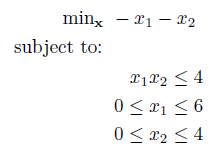
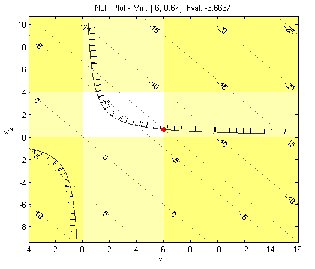

Example 1
Bilinearly constrained nonlinear program:

The above problem contains a linear objective function, but a bilinear inequality constraint which infers a NLP (or technically a QCLP). To solve this using BARON, first write anonymous functions for the objective and constraint, then declare the constraint and decision variable bounds:
% Objective Function
fun = @(x) -x(1) - x(2);
% Nonlinear Constraints
nlcon = @(x) x(1)*x(2); %note we could also use prod(x)
cl = -Inf;
cu = 4;
% Bounds
lb = [0;0];
ub = [6;4];
This can be solved using BARON as follows:
x = baron(fun,[],[],[],lb,ub,nlcon,cl,cu)
And the solution is:
x =
6.0000
0.6667
Using MATLAB's plotting functions for two- (or sometimes three-) dimensional problems it can be useful to plot the objective, constraints and solution:

The MATLAB/BARON interfarce is provided from http://www.minlp.com.